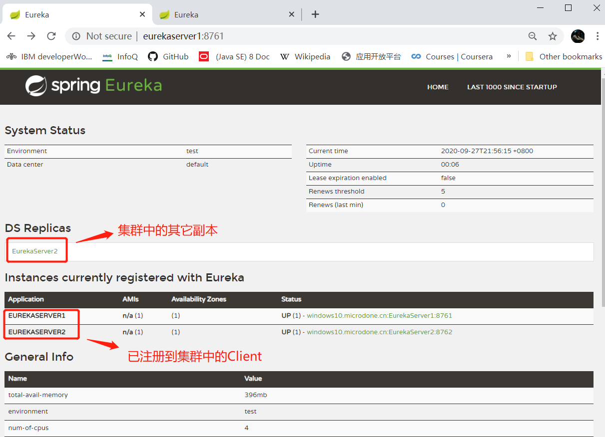
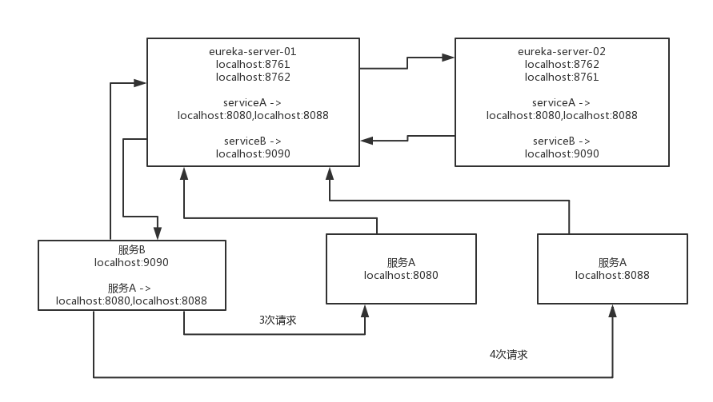
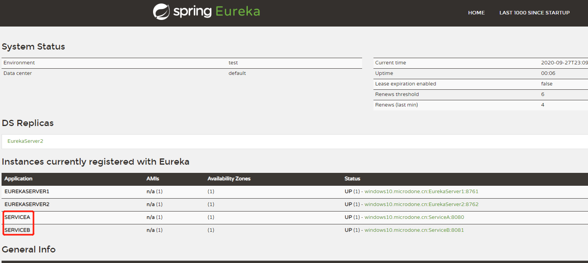
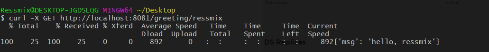

本章，我将基于Spring Cloud——Edgware.SR3 搭建一个Eureka Demo应用，演示下Eureka的基本使用。我这里没有使用Spring Cloud的最新版本，而是使用了Edgware.SR3，其对应的Netflix Eureka版本是1.7.2。但这不会影响后面我对Eureka核心原理的讲解，事实上，源码的阅读应该从最初的Skeleton版本开始。
另外说明一下，Spring Cloud Eureka Server和Client仅仅是对Netflix Eureka进行了封装，加了一些注解，对Spring Boot进行支持。所以阅读Eureka源码，应该先从Netflix Eureka开始，看完后再把Spring Cloud Eureka Server和Client两个项目的源码给看一下就可以了。
Netflix Eureka源码： https://github.com/Netflix/eureka；
Spring Cloud源码：https://github.com/spring-cloud/spring-cloud-netflix。
本节，我将构建一个由2节点组成的Eureka Server集群，然后注册两个应用服务：ServiceA和ServiceB。
首先，我们构建Eureka Server集群，需要新建一个Spring Boot应用，引入相关的Maven POM依赖：
<project xmlns="http://maven.apache.org/POM/4.0.0" xmlns:xsi="http://www.w3.org/2001/XMLSchema-instance"
xsi:schemaLocation="http://maven.apache.org/POM/4.0.0 http://maven.apache.org/xsd/maven-4.0.0.xsd">
<modelVersion>4.0.0</modelVersion>
<groupId>com.tpvlog</groupId>
<artifactId>eureka-server</artifactId>
<version>0.0.1-SNAPSHOT</version>
<packaging>jar</packaging>
<name>eureka-server</name>
<!--Spring Boot依赖-->
<parent>
<groupId>org.springframework.boot</groupId>
<artifactId>spring-boot-starter-parent</artifactId>
<version>1.5.13.RELEASE</version>
</parent>
<properties>
<project.build.sourceEncoding>UTF-8</project.build.sourceEncoding>
</properties>
<!--Spring Cloud依赖-->
<dependencyManagement>
<dependencies>
<dependency>
<groupId>org.springframework.cloud</groupId>
<artifactId>spring-cloud-dependencies</artifactId>
<version>Edgware.SR3</version>
<type>pom</type>
<scope>import</scope>
</dependency>
</dependencies>
</dependencyManagement>
<!--Eureka依赖-->
<dependencies>
<dependency>
<groupId>org.springframework.cloud</groupId>
<artifactId>spring-cloud-starter-config</artifactId>
</dependency>
<!--Eureka Client依赖-->
<dependency>
<groupId>org.springframework.cloud</groupId>
<artifactId>spring-cloud-starter-eureka</artifactId>
</dependency>
<!--Eureka Server依赖-->
<dependency>
<groupId>org.springframework.cloud</groupId>
<artifactId>spring-cloud-starter-eureka-server</artifactId>
</dependency>
</dependencies>
</project>
注意上面，我同时引入了spring-cloud-starter-eureka这个依赖，因为在集群部署下，每个Eureka Server都是其它Server的客户端，用来进行集群间的数据复制。
接着，是Spring Boot的启动类，注意这里使用了@EnableEurekaServer注解，标识这是一个EurekaServer：
/**
* eureka注册中心
*
* @author ressmix
*/
@SpringBootApplication
@EnableEurekaServer
public class EurekaServer {
public static void main(String[] args) {
SpringApplication.run(EurekaServer.class, args);
}
}
接着是Spring Boot的配置类——application.yml：
spring:
application:
name: EurekaServer1
server:
port: 8761
eureka:
# Eureka实例配置
instance:
# 配置通过主机名方式注册
hostname: EurekaServer1
# Eureka Client配置
client:
serviceUrl:
# 作为client向EurekaServer2进行注册
defaultZone: http://EurekaServer2:8762/eureka/
EurekaServer1这个Server节点将启动在8761端口提供服务。同时，EurekaServer1自身也作为Eureka Client，向EurekaServer2这个Server节点注册自己，因为Eureka Server集群中的每个节点，对于其它节点来说就是一个客户端，需要同步数据。
按照同样的方式，我们再新建一个Spring Boot应用作为EurekaServer2，唯一区别是application.yml配置不同：
spring:
application:
name: EurekaServer2
server:
port: 8762
eureka:
# Eureka Server配置
instance:
# 配置通过主机名方式注册
hostname: EurekaServer2
# Eureka Client配置
client:
serviceUrl:
# 作为client向EurekaServer1进行注册
defaultZone: http://EurekaServer1:8761/eureka/
注意，记得在测试机器中的hosts文件里加上域名和IP的映射配置，我是直接在本机测试，所以加上如下两条配置：
127.0.0.1 EurekaServer1127.0.0.1 EurekaServer2
最后，我们分别启动这两个节点，然后通过访问http://EurekaServer2:8762/ 或者 http://EurekaServer1:8761/ 可以进入Eureka控制台，看到集群的整体情况。以EurekaServer1的控制台为例：

接着，我们来新建两个服务SerivceA和ServiceB，作为Eureka Client。注意，Eureka提供的客户端是不区分Provider和Consumer的，也就是说，Provider同时也会是Consumer。
我这里将ServiceA作为服务提供者。首先引入maven pom依赖，我这里只贴dependencies依赖了，需要注意的是我没有引入spring-cloud-starter-eureka-server，因为这是一个Eureka Client：
<dependencies>
<dependency>
<groupId>org.springframework.cloud</groupId>
<artifactId>spring-cloud-starter-config</artifactId>
</dependency>
<dependency>
<groupId>org.springframework.cloud</groupId>
<artifactId>spring-cloud-starter-eureka</artifactId>
</dependency>
</dependencies>
接着，是Spring Boot的启动类，注意这里使用了@EnableEurekaClient注解，标识这是一个Eureka Client：
@SpringBootApplication
@EnableEurekaClient
public class ServiceAApplication {
public static void main(String[] args) {
SpringApplication.run(ServiceAApplication.class, args);
}
}
ServiceA的Spring Boot配置如下：
server:
port: 8080
# 应用名称
spring:
application:
name: ServiceA
eureka:
# 应用实例信息
instance:
hostname: localhost
client:
serviceUrl:
# 作为client向Eureka Server集群进行注册
defaultZone: http://EurekaServer1:8761/eureka,http://EurekaServer2:8762/eureka
最后，ServiceA提供的服务接口如下：
@RestController
public class ServiceAController {
@GetMapping(value = "/sayHello/{name}")
public String sayHello(@PathVariable("name") String name) {
System.out.println("Service A被调用了一次");
return "{'msg': 'hello, " + name + "'}";
}
}
我这里将ServiceB作为服务消费者，启动类和pom与服务A完全相同。ServiceB的Spring Boot配置如下：
server:
port: 8081
# 应用名称
spring:
application:
name: ServiceB
eureka:
# 应用实例信息
instance:
hostname: localhost
client:
# 作为client向Eureka Server集群进行注册
serviceUrl:
defaultZone: http://EurekaServer1:8761/eureka,http://EurekaServer2:8762/eureka
注意：当defaultZone配置了多个Eureka Server节点时，谁配置在第一个，所有的服务优先就是访问那个eureka server。只有当这台eureka server宕机了，那么此时所有的服务在重试过后，才会访问其他的eureka server。
服务调用接口如下：
@RestController
@Configuration
public class ServiceBController {
@Bean
@LoadBalanced
public RestTemplate getRestTemplate() {
return new RestTemplate();
}
@GetMapping(value = "/greeting/{name}")
public String greeting(@PathVariable("name") String name) {
RestTemplate restTemplate = getRestTemplate();
return restTemplate.getForObject("http://ServiceA/sayHello/" + name, String.class);
}
}
这里我使用了@LoadBalanced注解，用于服务调用的客户端负载均衡，这个以后章节会提到，暂时不管。关键看服务调用的URL：
http://ServiceA/sayHello/
我这里并没有直接指定ServiceA的IP和端口，而是使用了它的应用名称——ServiceA。ServiceB会从Eureka Server拉取应用实例注册信息，然后从中选择一个ServiceA的实际地址进行调用，如下图：

接着，我们再访问：http://eurekaserver1:8761/ ，可以看到Eureka Client多了ServiceA和ServiceB：

如果此时我们直接访问ServiceB的接口，正常情况下，ServiceB就会去调用ServiceA接口，并返回响应：

本章，我讲解Eureka的基本使用，并搭建了一个集群部署的Eureka Demo。下一章开始，我们将正式进入Eureka源码的学习环节。